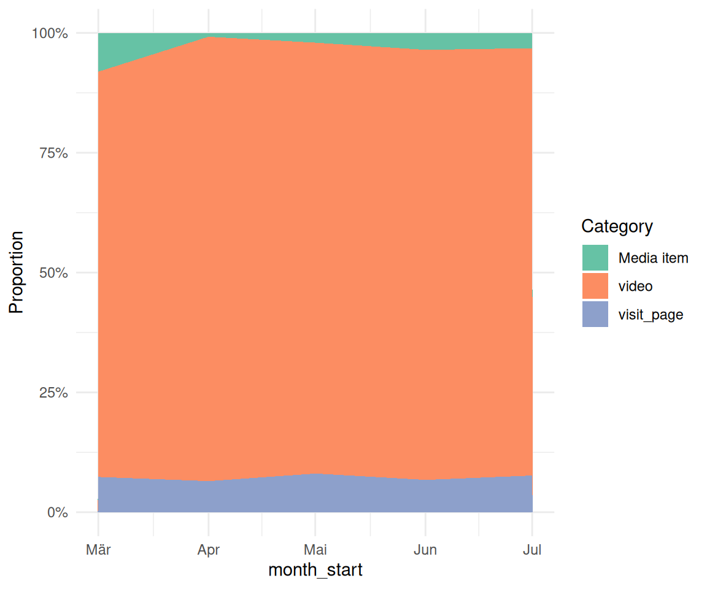
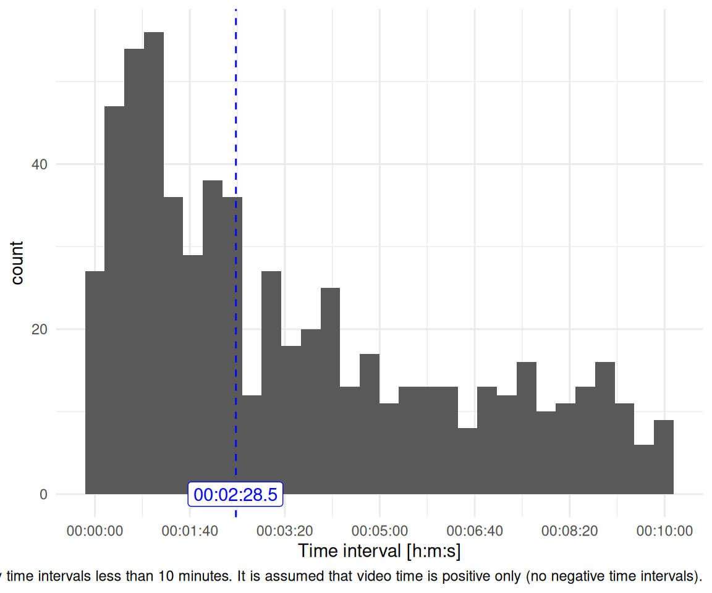
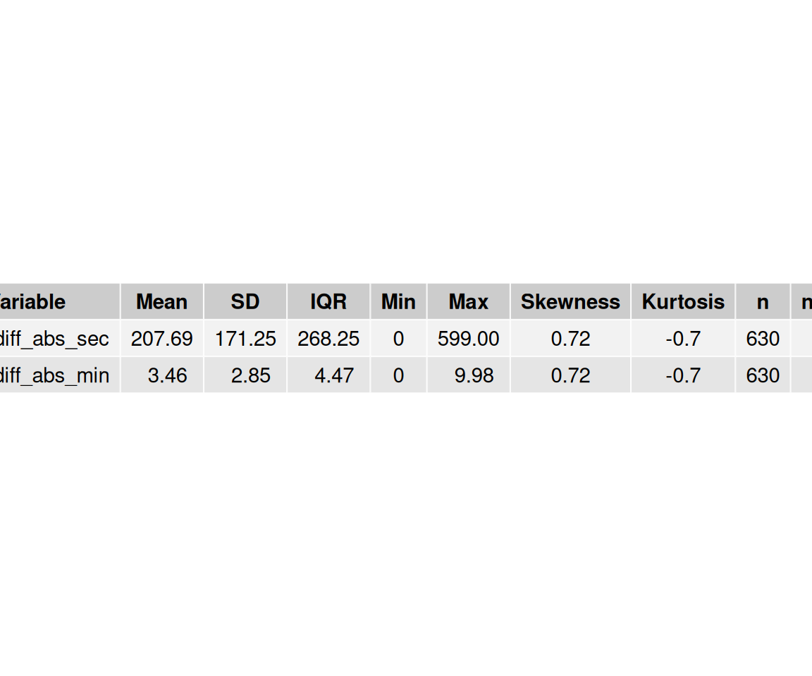
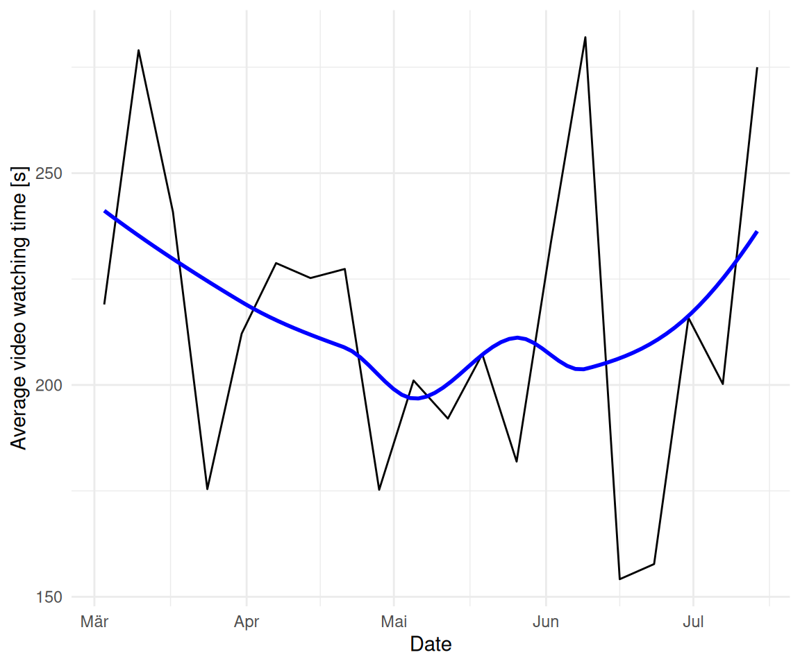
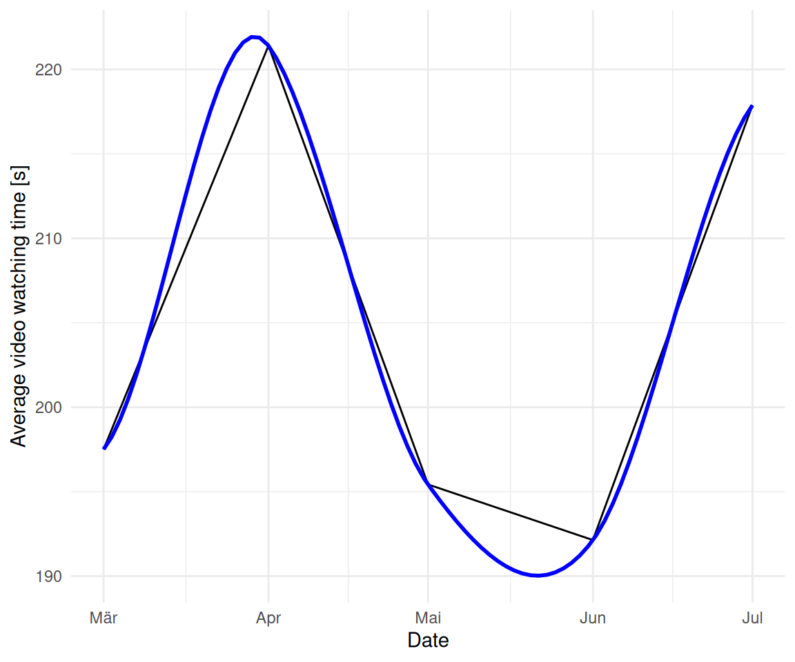

source("_common.r")
list.files("funs", full.names = TRUE) |>
purrr::walk(source)
options(digits = 3)
options(tinytable_tt_digits = 2)Challenge 08 – Solution
Datum/Uhrzeit: 2026-01-09 22:46
“Eine Hackathon-Variante zur Evaluation der Klickdaten des KI-Tools ‘HaNS’”
Betrachten Sie dazu die Targets-Datei auf Github.
1 Setup
1.1 Libs
1.2 Other setup
1.3 Load Targets
tar_load(c(
n_action_type,
time_visit_wday,
data_separated_distinct_slice,
glotzdauer_prepped,
course_and_uni_per_visit
))2 Musterlösung
2.1 Werten Sie die Top-10-Tätigkeiten aus, die die Besucher (idvisit) auf der Website durchführen.
Tipp: Zählen Sie dafür, welche Werte wie oft bei subtitle stehen. Auf welchem Platz steht Videonutzung?
Vgl. auch https://sebastiansauer.github.io/hans/40-nutzungsarten.html?q=top#h%C3%A4ufigkeiten.
2.1.1 Insgesamt
n_action_type_counted <-
n_action_type |>
drop_na() |>
count(category, sort = TRUE) |>
mutate(prop = round(n / sum(n), 2)) |>
mutate(position = row_number()) |>
select(position, everything())
n_action_type_counted |>
gt()| position | category | n | prop |
|---|---|---|---|
| 1 | video | 188539 | 0.88 |
| 2 | visit_page | 15002 | 0.07 |
| 3 | Media item | 6439 | 0.03 |
| 4 | login | 2402 | 0.01 |
| 5 | GESOA | 387 | 0.00 |
| 6 | in_media_search | 378 | 0.00 |
| 7 | Medien | 287 | 0.00 |
| 8 | logout | 212 | 0.00 |
| 9 | Search Results Count | 188 | 0.00 |
| 10 | click_channelcard | 187 | 0.00 |
| 11 | click_topic | 176 | 0.00 |
| 12 | Kanäle | 173 | 0.00 |
| 13 | Evaluation | 10 | 0.00 |
| 14 | Data protection | 4 | 0.00 |
Video steht auf Platz 1.
2.1.2 Bonus: Veränderung der TOP-3-Tätigkeiten im Zeitverlauf
TOP-3-Tätigkeiten:
top3 <-
n_action_type_counted$category[1:3]
top3
## [1] "video" "visit_page" "Media item"n_action_type_per_month_top3 <-
n_action_type |>
select(nr, idvisit, category) |>
ungroup() |>
filter(category %in% top3) |>
left_join(time_visit_wday |> ungroup()) |>
select(-c(dow, hour, nr)) |>
drop_na() |>
mutate(month_start = floor_date(date_time, "month")) |>
count(month_start, category)
n_action_type_per_month_top3 |>
gt()| month_start | category | n |
|---|---|---|
| 2025-03-01 | Media item | 3198 |
| 2025-03-01 | video | 33300 |
| 2025-03-01 | visit_page | 2902 |
| 2025-04-01 | Media item | 619 |
| 2025-04-01 | video | 71493 |
| 2025-04-01 | visit_page | 5006 |
| 2025-05-01 | Media item | 780 |
| 2025-05-01 | video | 34387 |
| 2025-05-01 | visit_page | 3088 |
| 2025-06-01 | Media item | 857 |
| 2025-06-01 | video | 21794 |
| 2025-06-01 | visit_page | 1638 |
| 2025-07-01 | Media item | 985 |
| 2025-07-01 | video | 27565 |
| 2025-07-01 | visit_page | 2368 |
Vis:
n_action_type_per_month_top3 |>
ggplot(aes(
x = month_start,
y = n,
fill = category # Changed from 'color' to 'fill'
)) +
# Use geom_area() and set position="fill" to stack and normalize to 100%
geom_area(position = "fill") +
# Optional: Customize the y-axis to show percentages
scale_y_continuous(labels = scales::label_percent()) +
labs(
y = "Proportion",
fill = "Category"
)
2.2 Berechnen Sie die Videonutzung (“Glotzdauer”)
Berechnen Sie die Videonutzung (“Glotzdauer”), d.h. die Zeit, wie lange die Besucher (idvisit) sich Videos anschauen. Tipp: Die Videodauer lässt sich mit Hilfe von eventaction und dazu play (Beginn Video schauen) bzw. pause (Ende) annähernd berechnen. Allerdings darf man auf diese Werte keine exakten Lösungen erwarten.
Achtung: Die Videozeit ist schwierig auszuwerten: Die Nutzer beenden keine Videos, in dem sie auf “Pause” drücken, sondern indem sie andere Aktionen durchführen. Dies ist aber analytisch schwer abzubilden.
Vgl. die Definition des Targets glotzdauer in der Pipeline.
Kurz gesagt wird die Zeit-Differenz zwischen zwei aufeinander folgenden “Play” und “Pause” Aktionen berechnet.
Allerdings hat dieses Vorgehen Schwierigkeiten: Nicht immer folgt auf einem “Play” ein “Pause”. Es ist schwer auszuwerten, wann die Betrachtung eines Videos endet. Daher ist diese Analyse nur vorsichtig zu interpretieren.
Die Definition der Funktion glotzdauer.R ist online dokumentiert.
2.2.1 Insgesamt
as_tibble(data_separated_distinct_slice) |>
drop_na() |>
filter(first_play != Inf) |>
head(30)| idvisit | first_play | last_pause | time_diff |
|---|---|---|---|
| 6 | 2025-03-06 14:05:22 | 2025-03-06 14:10:39 | 317 secs |
| 8 | 2025-03-06 14:05:50 | 2025-03-06 14:07:07 | 77 secs |
| 10 | 2025-03-06 12:55:04 | 2025-03-06 12:59:27 | 263 secs |
| 15 | 2025-03-12 07:50:27 | 2025-03-12 07:52:27 | 120 secs |
| 16 | 2025-03-13 11:23:34 | 2025-03-13 11:28:20 | 286 secs |
| 18 | 2025-03-14 14:25:51 | 2025-03-14 14:41:52 | 961 secs |
| 19 | 2025-03-14 13:43:55 | 2025-03-14 13:51:06 | 431 secs |
| 21 | 2025-03-17 21:35:40 | 2025-03-17 21:46:24 | 644 secs |
| 23 | 2025-03-17 21:35:40 | 2025-03-17 21:46:24 | 644 secs |
| 26 | 2025-03-18 20:45:16 | 2025-03-18 20:54:26 | 550 secs |
| 27 | 2025-03-18 19:34:04 | 2025-03-18 19:59:19 | 1515 secs |
| 32 | 2025-03-18 11:39:13 | 2025-03-18 11:40:42 | 89 secs |
| 35 | 2025-03-19 21:46:44 | 2025-03-19 22:00:06 | 802 secs |
| 36 | 2025-03-19 21:14:38 | 2025-03-19 21:19:01 | 263 secs |
| 41 | 2025-03-19 15:37:15 | 2025-03-19 16:05:20 | 1685 secs |
| 47 | 2025-03-20 22:24:33 | 2025-03-20 23:58:32 | 5639 secs |
| 49 | 2025-03-20 23:03:38 | 2025-03-20 23:25:33 | 1315 secs |
| 50 | 2025-03-20 21:27:20 | 2025-03-20 21:55:31 | 1691 secs |
| 51 | 2025-03-20 20:22:23 | 2025-03-20 21:46:19 | 5036 secs |
| 53 | 2025-03-20 17:59:06 | 2025-03-20 18:55:32 | 3386 secs |
| 54 | 2025-03-20 18:21:45 | 2025-03-20 18:27:09 | 324 secs |
| 56 | 2025-03-20 17:45:16 | 2025-03-20 17:46:24 | 68 secs |
| 58 | 2025-03-20 15:50:08 | 2025-03-20 16:25:45 | 2137 secs |
| 60 | 2025-03-20 13:13:26 | 2025-03-20 14:24:50 | 4284 secs |
| 61 | 2025-03-20 12:02:49 | 2025-03-20 12:05:28 | 159 secs |
| 64 | 2025-03-20 10:01:14 | 2025-03-20 10:01:53 | 39 secs |
| 65 | 2025-03-20 09:57:28 | 2025-03-20 10:00:09 | 161 secs |
| 69 | 2025-03-20 08:10:46 | 2025-03-20 08:13:03 | 137 secs |
| 73 | 2025-03-20 04:36:48 | 2025-03-20 04:56:42 | 1194 secs |
| 76 | 2025-03-21 22:06:46 | 2025-03-21 22:10:28 | 222 secs |
data_separated_distinct_slice_summary <-
data_separated_distinct_slice |>
mutate(time_diff = abs(time_diff)) |>
# without glotzdauer smaller than 10 minutes:
filter(time_diff < 60 * 10) |>
summarise(
time_diff_median = median(time_diff, na.rm = TRUE),
time_diff_median_hms = hms::as_hms(median(time_diff, na.rm = TRUE)),
time_diff_mean_hms = hms::as_hms(mean(time_diff, na.rm = TRUE)),
time_diff_mean = mean(time_diff, na.rm = TRUE),
time_diff_sd = sd(time_diff, na.rm = TRUE),
n = n()
)
data_separated_distinct_slice_summary |>
kable(digits = 2)| time_diff_median | time_diff_median_hms | time_diff_mean_hms | time_diff_mean | time_diff_sd | n |
|---|---|---|---|---|---|
| 148 secs | 00:02:28.5 | 00:03:27.688889 | 208 secs | 171 | 630 |
Für die folgende Darstellung wurden die absoluten Zeitwerte verwendet, d.h. ohne Vorzeichen.
data_separated_distinct_slice |>
# we will assume that negative glotzdauer is the as positive glotzdauer:
mutate(time_diff = abs(time_diff)) |>
# without glotzdauer smaller than 10 minutes:
filter(time_diff < 60 * 10) |>
ggplot(aes(x = time_diff)) +
geom_histogram() +
scale_x_time(breaks = pretty_breaks()) +
labs(
x = "Time interval [h:m:s]",
caption = "Only time intervals less than 10 minutes. It is assumed that video time is positive only (no negative time intervals)."
) +
theme_minimal() +
geom_vline(xintercept = data_separated_distinct_slice_summary$time_diff_median,
linetype = "dashed", color = "blue") +
annotate("label",
x = trunc(data_separated_distinct_slice_summary$time_diff_median_hms),
y = 0,
color = "blue",
label = data_separated_distinct_slice_summary$time_diff_median_hms,
)
glotzdauer_tbl <-
glotzdauer_prepped |>
select(time_diff_abs_sec, time_diff_abs_min) |>
describe_distribution()
glotzdauer_tbl |>
print_md()| Variable | Mean | SD | IQR | Range | Skewness | Kurtosis | n | n_Missing |
|---|---|---|---|---|---|---|---|---|
| time_diff_abs_sec | 207.69 | 171.25 | 268.25 | (0.00, 599.00) | 0.72 | -0.70 | 630 | 0 |
| time_diff_abs_min | 3.46 | 2.85 | 4.47 | (0.00, 9.98) | 0.72 | -0.70 | 630 | 0 |
glotzdauer_tbl |>
mutate(across(where(is.numeric), ~ round(., 2))) |>
ggpubr::ggtexttable()
2.3 Untersuchen und visualisieren Sie, ob sich das Verhalten in Bezug auf die Videos verändert hat im Laufe der Zeit (Wochen und Monate) im Hinblick auf die Glotzdauer.
2.3.1 Wochen
glotzdauer_prepped_tbl_weeks <-
glotzdauer_prepped |>
mutate(first_of_month = floor_date(first_play, unit = "week")) |>
group_by(first_of_month) |>
summarise(time_diff_mean = mean(time_diff, na.rm = TRUE))
glotzdauer_prepped_tbl_weeks| first_of_month | time_diff_mean |
|---|---|
| 2025-03-03 | 219 secs |
| 2025-03-10 | 279 secs |
| 2025-03-17 | 241 secs |
| 2025-03-24 | 175 secs |
| 2025-03-31 | 212 secs |
| 2025-04-07 | 229 secs |
| 2025-04-14 | 225 secs |
| 2025-04-21 | 227 secs |
| 2025-04-28 | 175 secs |
| 2025-05-05 | 201 secs |
| 2025-05-12 | 192 secs |
| 2025-05-19 | 207 secs |
| 2025-05-26 | 182 secs |
| 2025-06-02 | 234 secs |
| 2025-06-09 | 282 secs |
| 2025-06-16 | 154 secs |
| 2025-06-23 | 158 secs |
| 2025-06-30 | 216 secs |
| 2025-07-07 | 200 secs |
| 2025-07-14 | 275 secs |
glotzdauer_prepped_tbl_weeks |>
ggplot(aes(x = first_of_month, y = time_diff_mean)) +
geom_line() +
theme_minimal() +
geom_smooth(method = "loess", se = FALSE, color = "blue") +
labs(
x = "Date",
y = "Average video watching time [s]"
)
2.3.2 Monate
glotzdauer_prepped_tbl <-
glotzdauer_prepped |>
mutate(first_of_month = floor_date(first_play, unit = "month")) |>
group_by(first_of_month) |>
summarise(time_diff_mean = mean(time_diff, na.rm = TRUE))
glotzdauer_prepped_tbl| first_of_month | time_diff_mean |
|---|---|
| 2025-03-01 | 198 secs |
| 2025-04-01 | 221 secs |
| 2025-05-01 | 195 secs |
| 2025-06-01 | 192 secs |
| 2025-07-01 | 218 secs |
glotzdauer_prepped_tbl |>
ggplot(aes(x = first_of_month, y = time_diff_mean)) +
geom_line() +
theme_minimal() +
geom_smooth(method = "loess", se = FALSE, color = "blue") +
labs(
x = "Date",
y = "Average video watching time [s]"
)
2.4 Berechnen Sie die Videonutzung pro Kunde (Hochschule).
glotzdauer_per_customer <-
glotzdauer_prepped |>
left_join(
course_and_uni_per_visit |>
select(idvisit, university) |>
distinct() |>
mutate(idvisit = as.integer(idvisit)),
) |>
group_by(university) |>
summarise(
time_diff_mean = mean(time_diff, na.rm = TRUE),
time_diff_median = median(time_diff, na.rm = TRUE),
n = n()
) |>
drop_na() |>
arrange(desc(time_diff_mean)) glotzdauer_per_customer %>%
mutate(
time_diff_mean = as.difftime(round(as.numeric(time_diff_mean), 0), units = "secs"),
time_diff_median = as.difftime(round(as.numeric(time_diff_median), 0), units = "secs")
) |>
gt()| university | time_diff_mean | time_diff_median | n |
|---|---|---|---|
| evhn | 465 | 465 | 1 |
| th-nuernberg | 217 | 158 | 150 |
| hswt | 209 | 169 | 236 |
| th-owl | 74 | 74 | 1 |
2.5 Zum Quarto-Bericht
2.5.1 Wie kann man die Größe eines Diagramms in Quarto einstellen?
2.5.2 Wie kann man Diagramme referenzieren (z.B. “Diagramm <3> zeigt blabla”, wobei “Diagramm 3” verlinkt ist zum Diagramm).
2.5.3 Wie kann man eine Gliederung zum Quarto-Bericht hinzufügen.
2.5.4 Welche Code-Chunk-Optionen gibt es in Quarto? Nennen Sie zumindest 3. Wie ist die Syntax aufgebaut?
2.5.5 Beschreiben Sie das Ausgabeformat “Typst”
2.6 sessionInfo
sessioninfo::session_info()
## ─ Session info ───────────────────────────────────────────────────────────────
## setting value
## version R version 4.5.1 (2025-06-13)
## os Ubuntu 25.10
## system x86_64, linux-gnu
## ui X11
## language (EN)
## collate de_DE.UTF-8
## ctype de_DE.UTF-8
## tz Europe/Berlin
## date 2026-01-09
## pandoc 3.6.3 @ /usr/lib/rstudio/resources/app/bin/quarto/bin/tools/x86_64/ (via rmarkdown)
## quarto 1.8.25 @ /usr/lib/rstudio/resources/app/bin/quarto/bin/quarto
##
## ─ Packages ───────────────────────────────────────────────────────────────────
## package * version date (UTC) lib source
## abind 1.4-8 2024-09-12 [3] CRAN (R 4.4.1)
## backports 1.5.0 2024-05-23 [3] CRAN (R 4.4.1)
## base64url 1.4 2018-05-14 [3] CRAN (R 4.0.1)
## bayestestR * 0.17.0 2025-08-29 [1] RSPM (R 4.5.1)
## broom 1.0.10 2025-09-13 [1] RSPM
## callr 3.7.6 2024-03-25 [3] CRAN (R 4.4.0)
## car 3.1-3 2024-09-27 [3] CRAN (R 4.4.1)
## carData 3.0-5 2022-01-06 [3] CRAN (R 4.1.2)
## cli 3.6.5 2025-04-23 [1] CRAN (R 4.5.1)
## coda 0.19-4.1 2024-01-31 [1] RSPM
## codetools 0.2-20 2024-03-31 [4] CRAN (R 4.3.3)
## correlation * 0.8.8 2025-07-08 [1] RSPM (R 4.5.1)
## cowplot 1.1.3 2024-01-22 [3] CRAN (R 4.3.2)
## data.table 1.17.8 2025-07-10 [1] RSPM (R 4.5.1)
## datawizard * 1.3.0 2025-10-11 [1] RSPM (R 4.5.1)
## dichromat 2.0-0.1 2022-05-02 [3] CRAN (R 4.2.0)
## digest 0.6.39 2025-11-19 [1] CRAN (R 4.5.1)
## dplyr * 1.1.4 2023-11-17 [3] CRAN (R 4.4.2)
## easystats * 0.7.5 2025-07-11 [1] RSPM (R 4.5.1)
## effectsize * 1.0.1 2025-05-27 [1] RSPM (R 4.5.1)
## emmeans 1.10.7 2025-01-31 [3] CRAN (R 4.4.2)
## estimability 1.5.1 2024-05-12 [3] CRAN (R 4.4.2)
## evaluate 1.0.5 2025-08-27 [1] CRAN (R 4.5.1)
## farver 2.1.2 2024-05-13 [3] CRAN (R 4.4.1)
## fastmap 1.2.0 2024-05-15 [3] CRAN (R 4.4.1)
## forcats * 1.0.0 2023-01-29 [3] CRAN (R 4.2.2)
## Formula 1.2-5 2023-02-24 [3] CRAN (R 4.2.2)
## fs 1.6.6 2025-04-12 [1] CRAN (R 4.5.1)
## generics 0.1.4 2025-05-09 [1] CRAN (R 4.5.1)
## ggplot2 * 4.0.1 2025-11-14 [1] RSPM (R 4.5.1)
## ggpubr * 0.6.2 2025-10-17 [1] RSPM
## ggsignif 0.6.4 2022-10-13 [3] CRAN (R 4.2.2)
## glue 1.8.0 2024-09-30 [3] CRAN (R 4.4.2)
## gridExtra 2.3 2017-09-09 [3] CRAN (R 4.0.1)
## gt * 1.1.0 2025-09-23 [1] RSPM (R 4.5.1)
## gtable 0.3.6 2024-10-25 [3] CRAN (R 4.4.2)
## hms 1.1.3 2023-03-21 [3] CRAN (R 4.3.1)
## htmltools 0.5.8.1 2024-04-04 [3] CRAN (R 4.4.0)
## htmlwidgets 1.6.4 2023-12-06 [3] CRAN (R 4.3.2)
## igraph 2.1.4 2025-01-23 [3] CRAN (R 4.5.0)
## insight * 1.4.2 2025-09-02 [1] RSPM (R 4.5.1)
## jsonlite 2.0.0 2025-03-27 [1] CRAN (R 4.5.1)
## knitr * 1.50 2025-03-16 [3] CRAN (R 4.4.3)
## labeling 0.4.3 2023-08-29 [3] CRAN (R 4.3.1)
## lattice 0.22-7 2025-04-02 [4] CRAN (R 4.4.3)
## lifecycle 1.0.4 2023-11-07 [3] CRAN (R 4.3.2)
## lubridate * 1.9.4 2024-12-08 [3] CRAN (R 4.4.2)
## magrittr 2.0.4 2025-09-12 [1] CRAN (R 4.5.1)
## MASS 7.3-65 2025-02-28 [4] CRAN (R 4.4.3)
## Matrix 1.7-3 2025-03-11 [4] CRAN (R 4.4.3)
## mgcv 1.9-3 2025-04-04 [4] CRAN (R 4.4.3)
## modelbased * 0.13.0 2025-08-30 [1] RSPM (R 4.5.1)
## multcomp 1.4-28 2025-01-29 [3] CRAN (R 4.4.2)
## mvtnorm 1.3-3 2025-01-10 [1] RSPM
## nlme 3.1-168 2025-03-31 [4] CRAN (R 4.4.3)
## parameters * 0.28.2 2025-09-10 [1] RSPM (R 4.5.1)
## performance * 0.15.2 2025-10-06 [1] RSPM (R 4.5.1)
## pillar 1.11.1 2025-09-17 [1] CRAN (R 4.5.1)
## pkgconfig 2.0.3 2019-09-22 [3] CRAN (R 4.0.1)
## prettyunits 1.2.0 2023-09-24 [3] CRAN (R 4.3.1)
## processx 3.8.6 2025-02-21 [3] CRAN (R 4.4.3)
## ps 1.9.0 2025-02-18 [3] CRAN (R 4.4.3)
## purrr * 1.2.0 2025-11-04 [1] RSPM (R 4.5.1)
## R6 2.6.1 2025-02-15 [3] CRAN (R 4.4.3)
## RColorBrewer 1.1-3 2022-04-03 [3] CRAN (R 4.2.0)
## readr * 2.1.6 2025-11-14 [1] RSPM
## report * 0.6.2 2025-11-03 [1] RSPM (R 4.5.1)
## rlang 1.1.6 2025-04-11 [1] CRAN (R 4.5.1)
## rmarkdown 2.30 2025-09-28 [1] RSPM (R 4.5.1)
## rstatix 0.7.2 2023-02-01 [3] CRAN (R 4.2.2)
## rstudioapi 0.17.1 2024-10-22 [3] CRAN (R 4.4.1)
## S7 0.2.1 2025-11-14 [1] RSPM (R 4.5.1)
## sandwich 3.1-1 2024-09-15 [3] CRAN (R 4.4.1)
## sass 0.4.10 2025-04-11 [1] RSPM (R 4.5.1)
## scales * 1.4.0 2025-04-24 [1] RSPM (R 4.5.1)
## secretbase 1.0.5 2025-03-04 [1] RSPM
## see * 0.12.0 2025-09-14 [1] RSPM (R 4.5.1)
## sessioninfo 1.2.3 2025-02-05 [3] CRAN (R 4.4.3)
## stringi 1.8.7 2025-03-27 [1] CRAN (R 4.5.1)
## stringr * 1.6.0 2025-11-04 [1] CRAN (R 4.5.1)
## survival 3.8-3 2024-12-17 [4] CRAN (R 4.4.2)
## targets * 1.11.4 2025-09-13 [1] RSPM
## TH.data 1.1-3 2025-01-17 [3] CRAN (R 4.4.2)
## tibble * 3.3.0 2025-06-08 [1] CRAN (R 4.5.1)
## tidyr * 1.3.1 2024-01-24 [3] CRAN (R 4.3.2)
## tidyselect 1.2.1 2024-03-11 [3] CRAN (R 4.4.0)
## tidyverse * 2.0.0 2023-02-22 [3] CRAN (R 4.4.2)
## timechange 0.3.0 2024-01-18 [3] CRAN (R 4.4.3)
## tinytable * 0.15.1 2025-11-02 [1] CRAN (R 4.5.1)
## tzdb 0.5.0 2025-03-15 [3] CRAN (R 4.4.3)
## vctrs 0.6.5 2023-12-01 [3] CRAN (R 4.3.2)
## withr 3.0.2 2024-10-28 [3] CRAN (R 4.4.1)
## xfun 0.54 2025-10-30 [1] CRAN (R 4.5.1)
## xml2 1.5.0 2025-11-17 [1] CRAN (R 4.5.1)
## xtable 1.8-4 2019-04-21 [3] CRAN (R 4.0.1)
## yaml 2.3.10 2024-07-26 [3] CRAN (R 4.4.1)
## zoo 1.8-14 2025-04-10 [3] CRAN (R 4.4.3)
##
## [1] /home/sebastian-sauer/R/x86_64-pc-linux-gnu-library/4.5
## [2] /usr/local/lib/R/site-library
## [3] /usr/lib/R/site-library
## [4] /usr/lib/R/library
## * ── Packages attached to the search path.
##
## ──────────────────────────────────────────────────────────────────────────────Wiederverwendung
MIT
Zitat
Mit BibTeX zitieren:
@online{sauer,
author = {Sauer, Sebastian},
title = {Challenge 08 -\/- Solution},
url = {https://sebastiansauer.github.io/hans-hackathon2025/challenge08-solution.html},
langid = {de-DE}
}
Bitte zitieren Sie diese Arbeit als:
Sauer, Sebastian. n.d. “Challenge 08 -- Solution.” https://sebastiansauer.github.io/hans-hackathon2025/challenge08-solution.html.